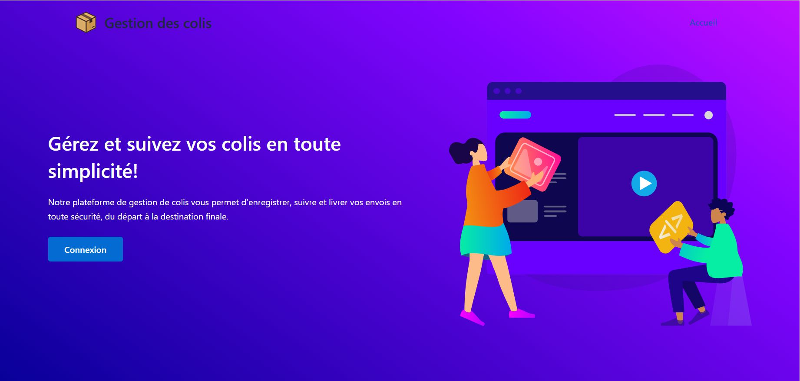
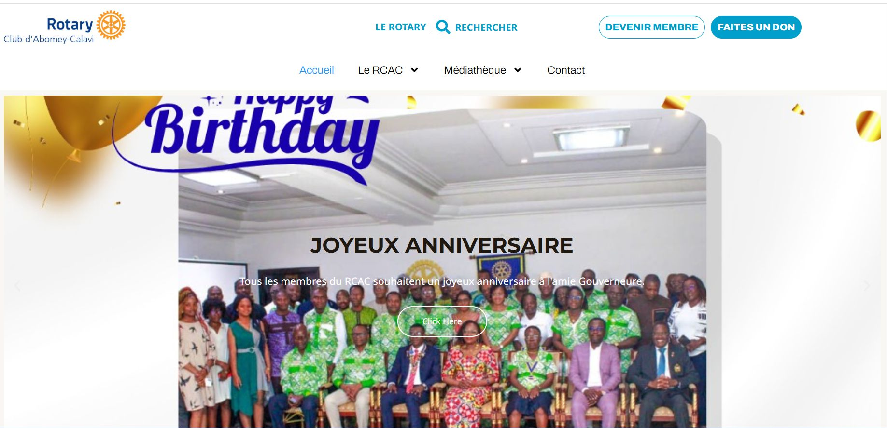
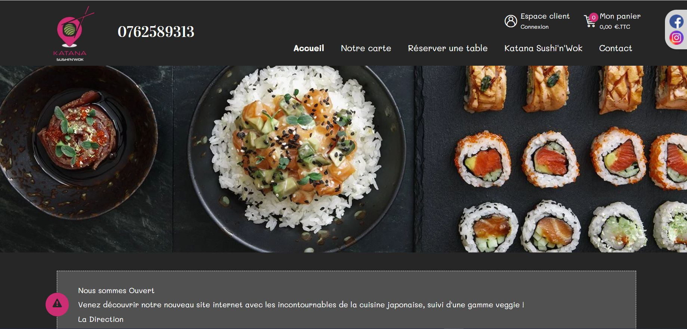
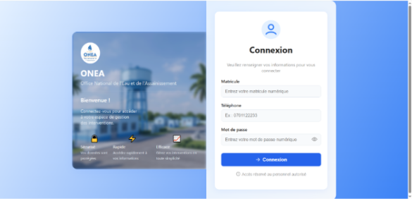
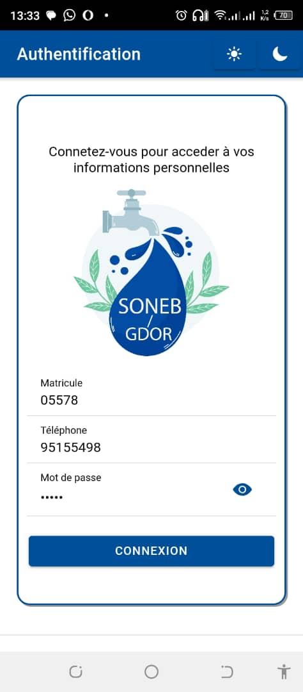

Mes Projets
 En ligne
En ligne
Projet pour la gestion des frets
Projet pour la gestion des frets de la Chine vers le Bénin
#html #css #js Voir ce projet En ligne
En ligne
Projet pour la numerisation des demandes de messe en ligne
Projet pour la demande des messes en ligne de PSJG
#html #css #js Voir ce projet
En ligneProjet de gestion des colis
Projet pour la gestion des colis de Lomé à Cotonou
#html #css #js Voir ce projet
En ligneProjet de site web de Rotary Club Abomey-Calavi
Projet de site web de Rotary Club Abomey-Calavi Bénin
#html #css #js Voir ce projet En cours
En cours
Application web de gestion de parcours des releveurs
Elle permet de visualiser en temps réel les déplacements, les performances et les statistiques de chaque releveur à travers une interface intuitive et interactive.
#html #css #js Voir ce projet
En ligneSite web de réservation de tables et de commande de nourriture
Ce site web permet aux clients de réserver facilement une table en ligne et de commander des plats à l’avance. Il offre une interface simple et intuitive pour consulter le menu, choisir un horaire de réservation et passer une commande en quelques clics. Cette solution aide les restaurants à mieux gérer leurs réservations et à améliorer l’expérience client
#html #css #js Voir ce projet
Hors ligneSite web de gestion de fin d’intervention des techniciens de pose des compteurs
Plateforme permettant de centraliser et de suivre les interventions réalisées par les techniciens sur le terrain. Elle offre la possibilité d’enregistrer les comptes rendus de fin d’intervention, de renseigner les informations liées aux compteurs installés, de suivre l’état d’avancement des travaux et de générer des statistiques. Cet outil facilite le contrôle, la traçabilité et l’optimisation des opérations.
#html #css #js Voir ce projet
Hors ligneApplication mobile de gestion de coupure des compteurs d’eau de la SONEB
Application destinée aux agents de terrain permettant de planifier, exécuter et suivre les opérations de coupure des compteurs d’eau. Elle facilite la saisie des informations sur les interventions, la localisation des abonnés, la mise à jour des statuts et la transmission en temps réel des données au système central. Cet outil améliore l’efficacité des opérations, la traçabilité et le contrôle des interventions.
#html #css #js Voir ce projet Hors ligne
Hors ligne
Application mobile de gestion de stock
Application permettant de suivre et de gérer efficacement les entrées, sorties et niveaux de stock en temps réel. Elle offre des fonctionnalités telles que l’enregistrement des mouvements de stock, la consultation des disponibilités, la gestion des inventaires et la génération de rapports. Cet outil facilite l’optimisation des ressources, réduit les erreurs et améliore la traçabilité des produits.
#html #css #js Voir ce projet